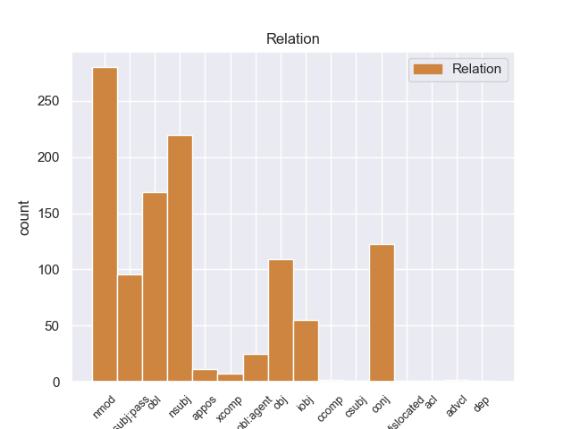
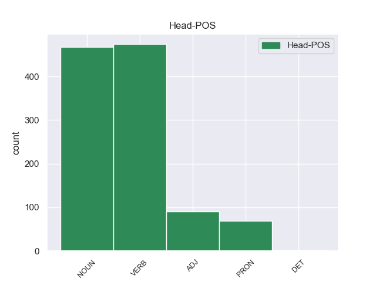

Distribution of features within this leaf



Agreement Rules sorted by frequency.
- When the dependent token is the conjunct(conj) of the head token, and the head token is NOUN and the dependent token is NOUN.
1 Per _ _ _ _ 0 _ _ _
2 esempio _ _ _ _ 0 _ _ _
3 le _ _ _ _ 0 _ _ _
4 barriere _ _ _ _ 0 _ _ _
5 sono _ _ _ _ 0 _ _ _
6 presenti _ _ _ _ 0 _ _ _
7 in _ _ _ _ 0 _ _ _
8 gli _ _ _ _ 0 _ _ _
9 ospedali _ _ _ _ 0 _ _ _
10 , _ _ _ _ 0 _ _ _
11 in _ _ _ _ 0 _ _ _
12 le _ _ _ _ 0 _ _ _
13 scuole _ _ _ _ 0 _ _ _
14 , _ _ _ _ 0 _ _ _
15 in _ _ _ _ 0 _ _ _
16 gli _ _ _ _ 0 _ _ _
17 uffici _ _ _ _ 0 _ _ _
18 postali _ _ _ _ 0 _ _ _
19 , _ _ _ _ 0 _ _ _
20 in _ _ _ _ 0 _ _ _
21 le _ _ _ _ 0 _ _ _
22 banche _ _ _ _ 0 _ _ _
23 , _ _ _ _ 0 _ _ _
24 in _ _ _ _ 0 _ _ _
25 i _ _ _ _ 0 _ _ _
26 giardini _ _ _ _ 0 _ _ _
27 pubblici _ _ _ _ 0 _ _ _
28 , _ _ _ _ 0 _ _ _
29 in _ _ _ _ 0 _ _ _
30 i _ _ _ _ 0 _ _ _
31 cinema cinema NOUN S Gender=Masc 0 _ _ _
32 , _ _ _ _ 0 _ _ _
33 in _ _ _ _ 0 _ _ _
34 i _ _ _ _ 0 _ _ _
35 negozi negozio NOUN S Gender=Masc|Number=Plur 31 conj 31:conj _
36 eccetera _ _ _ _ 0 _ _ _
37 . _ _ _ _ 0 _ _ _
1 Il _ _ _ _ 0 _ _ _
2 25 _ _ _ _ 0 _ _ _
3 dicembre _ _ _ _ 0 _ _ _
4 2003 _ _ _ _ 0 _ _ _
5 , _ _ _ _ 0 _ _ _
6 in _ _ _ _ 0 _ _ _
7 il _ _ _ _ 0 _ _ _
8 sud sud NOUN S Gender=Masc|Number=Sing 14 obl 14:obl:in _
9 di _ _ _ _ 0 _ _ _
10 l’ _ _ _ _ 0 _ _ _
11 Iran _ _ _ _ 0 _ _ _
12 c’ _ _ _ _ 0 _ _ _
13 è _ _ _ _ 0 _ _ _
14 stato essere VERB V Gender=Masc|Number=Sing|Tense=Past|VerbForm=Part 0 _ _ _
15 un _ _ _ _ 0 _ _ _
16 terremoto _ _ _ _ 0 _ _ _
17 molto _ _ _ _ 0 _ _ _
18 grave _ _ _ _ 0 _ _ _
19 . _ _ _ _ 0 _ _ _
1 Gli _ _ _ _ 0 _ _ _
2 articoli articolo NOUN S Gender=Masc|Number=Plur 6 nsubj:pass 6:nsubj:pass _
3 di _ _ _ _ 0 _ _ _
4 Selko-Uutiset _ _ _ _ 0 _ _ _
5 sono _ _ _ _ 0 _ _ _
6 scritti scrivere VERB V Gender=Masc|Number=Plur|Tense=Past|VerbForm=Part 0 _ _ _
7 in _ _ _ _ 0 _ _ _
8 lingua _ _ _ _ 0 _ _ _
9 finnica _ _ _ _ 0 _ _ _
10 . _ _ _ _ 0 _ _ _
1 Gli _ _ _ _ 0 _ _ _
2 edifici edificio NOUN S Gender=Masc|Number=Plur 8 nsubj 8:nsubj _
3 di _ _ _ _ 0 _ _ _
4 il _ _ _ _ 0 _ _ _
5 centro _ _ _ _ 0 _ _ _
6 storico _ _ _ _ 0 _ _ _
7 erano _ _ _ _ 0 _ _ _
8 costruiti costruire VERB V Gender=Masc|Number=Plur|Tense=Past|VerbForm=Part 0 _ _ _
9 con _ _ _ _ 0 _ _ _
10 l’ _ _ _ _ 0 _ _ _
11 argilla _ _ _ _ 0 _ _ _
12 rossa _ _ _ _ 0 _ _ _
13 di _ _ _ _ 0 _ _ _
14 il _ _ _ _ 0 _ _ _
15 deserto _ _ _ _ 0 _ _ _
16 , _ _ _ _ 0 _ _ _
17 un _ _ _ _ 0 _ _ _
18 materiale _ _ _ _ 0 _ _ _
19 molto _ _ _ _ 0 _ _ _
20 fragile _ _ _ _ 0 _ _ _
21 . _ _ _ _ 0 _ _ _
1 I _ _ _ _ 0 _ _ _
2 ricercatori _ _ _ _ 0 _ _ _
3 di _ _ _ _ 0 _ _ _
4 il _ _ _ _ 0 _ _ _
5 Censis _ _ _ _ 0 _ _ _
6 , _ _ _ _ 0 _ _ _
7 Centro _ _ _ _ 0 _ _ _
8 Studi _ _ _ _ 0 _ _ _
9 Investimenti _ _ _ _ 0 _ _ _
10 Sociali _ _ _ _ 0 _ _ _
11 , _ _ _ _ 0 _ _ _
12 hanno _ _ _ _ 0 _ _ _
13 presentato presentare VERB V Gender=Masc|Number=Sing|Tense=Past|VerbForm=Part 0 _ _ _
14 un _ _ _ _ 0 _ _ _
15 rapporto rapporto NOUN S Gender=Masc|Number=Sing 13 obj 13:obj _
16 su _ _ _ _ 0 _ _ _
17 le _ _ _ _ 0 _ _ _
18 condizioni _ _ _ _ 0 _ _ _
19 di _ _ _ _ 0 _ _ _
20 vita _ _ _ _ 0 _ _ _
21 di _ _ _ _ 0 _ _ _
22 la _ _ _ _ 0 _ _ _
23 popolazione _ _ _ _ 0 _ _ _
24 italiana _ _ _ _ 0 _ _ _
25 in _ _ _ _ 0 _ _ _
26 il _ _ _ _ 0 _ _ _
27 2003 _ _ _ _ 0 _ _ _
28 . _ _ _ _ 0 _ _ _
1 Stanford _ _ _ _ 0 _ _ _
2 - _ _ _ _ 0 _ _ _
3 ogni _ _ _ _ 0 _ _ _
4 anno _ _ _ _ 0 _ _ _
5 le _ _ _ _ 0 _ _ _
6 malattie _ _ _ _ 0 _ _ _
7 provocate provocare VERB V Gender=Fem|Number=Plur|Tense=Past|VerbForm=Part 0 _ _ _
8 da _ _ _ _ 0 _ _ _
9 le _ _ _ _ 0 _ _ _
10 zanzare zanzara NOUN S Gender=Fem|Number=Plur 7 obl:agent 7:obl:agent:da _
11 uccidono _ _ _ _ 0 _ _ _
12 milioni _ _ _ _ 0 _ _ _
13 di _ _ _ _ 0 _ _ _
14 persone _ _ _ _ 0 _ _ _
15 e _ _ _ _ 0 _ _ _
16 sono _ _ _ _ 0 _ _ _
17 causa _ _ _ _ 0 _ _ _
18 di _ _ _ _ 0 _ _ _
19 sofferenza _ _ _ _ 0 _ _ _
20 per _ _ _ _ 0 _ _ _
21 molte _ _ _ _ 0 _ _ _
22 altre _ _ _ _ 0 _ _ _
23 . _ _ _ _ 0 _ _ _
1 Però _ _ _ _ 0 _ _ _
2 secondo _ _ _ _ 0 _ _ _
3 gli _ _ _ _ 0 _ _ _
4 esperti _ _ _ _ 0 _ _ _
5 di _ _ _ _ 0 _ _ _
6 l' _ _ _ _ 0 _ _ _
7 Unicef _ _ _ _ 0 _ _ _
8 , _ _ _ _ 0 _ _ _
9 in _ _ _ _ 0 _ _ _
10 i _ _ _ _ 0 _ _ _
11 Paesi _ _ _ _ 0 _ _ _
12 poveri _ _ _ _ 0 _ _ _
13 sono _ _ _ _ 0 _ _ _
14 ancora _ _ _ _ 0 _ _ _
15 troppi troppo ADJ A Gender=Masc|Number=Plur 0 _ _ _
16 i _ _ _ _ 0 _ _ _
17 bambini bambino NOUN S Gender=Masc|Number=Plur 15 nsubj 15:nsubj|19:nsubj _
18 che _ _ _ _ 0 _ _ _
19 vivono _ _ _ _ 0 _ _ _
20 in _ _ _ _ 0 _ _ _
21 cattive _ _ _ _ 0 _ _ _
22 condizioni _ _ _ _ 0 _ _ _
23 . _ _ _ _ 0 _ _ _
1 I _ _ _ _ 0 _ _ _
2 ricercatori _ _ _ _ 0 _ _ _
3 di _ _ _ _ 0 _ _ _
4 il _ _ _ _ 0 _ _ _
5 Censis _ _ _ _ 0 _ _ _
6 , _ _ _ _ 0 _ _ _
7 Centro _ _ _ _ 0 _ _ _
8 Studi studio NOUN S Gender=Masc|Number=Plur 0 _ _ _
9 Investimenti investimento NOUN S Gender=Masc|Number=Plur 8 compound 8:compound _
10 Sociali _ _ _ _ 0 _ _ _
11 , _ _ _ _ 0 _ _ _
12 hanno _ _ _ _ 0 _ _ _
13 presentato _ _ _ _ 0 _ _ _
14 un _ _ _ _ 0 _ _ _
15 rapporto _ _ _ _ 0 _ _ _
16 su _ _ _ _ 0 _ _ _
17 le _ _ _ _ 0 _ _ _
18 condizioni _ _ _ _ 0 _ _ _
19 di _ _ _ _ 0 _ _ _
20 vita _ _ _ _ 0 _ _ _
21 di _ _ _ _ 0 _ _ _
22 la _ _ _ _ 0 _ _ _
23 popolazione _ _ _ _ 0 _ _ _
24 italiana _ _ _ _ 0 _ _ _
25 in _ _ _ _ 0 _ _ _
26 il _ _ _ _ 0 _ _ _
27 2003 _ _ _ _ 0 _ _ _
28 . _ _ _ _ 0 _ _ _
1 Ora _ _ _ _ 0 _ _ _
2 , _ _ _ _ 0 _ _ _
3 le _ _ _ _ 0 _ _ _
4 squadre _ _ _ _ 0 _ _ _
5 automobilistiche _ _ _ _ 0 _ _ _
6 devono _ _ _ _ 0 _ _ _
7 costruire _ _ _ _ 0 _ _ _
8 e _ _ _ _ 0 _ _ _
9 usare _ _ _ _ 0 _ _ _
10 un _ _ _ _ 0 _ _ _
11 solo _ _ _ _ 0 _ _ _
12 motore _ _ _ _ 0 _ _ _
13 , _ _ _ _ 0 _ _ _
14 che _ _ _ _ 0 _ _ _
15 deve _ _ _ _ 0 _ _ _
16 essere _ _ _ _ 0 _ _ _
17 lo _ _ _ _ 0 _ _ _
18 stesso stesso ADJ A Gender=Masc|Number=Sing 0 _ _ _
19 per _ _ _ _ 0 _ _ _
20 il _ _ _ _ 0 _ _ _
21 giro giro NOUN S Gender=Masc|Number=Sing 18 obl 18:obl:per _
22 di _ _ _ _ 0 _ _ _
23 qualifica _ _ _ _ 0 _ _ _
24 e _ _ _ _ 0 _ _ _
25 per _ _ _ _ 0 _ _ _
26 la _ _ _ _ 0 _ _ _
27 gara _ _ _ _ 0 _ _ _
28 . _ _ _ _ 0 _ _ _
1 Il _ _ _ _ 0 _ _ _
2 censimento _ _ _ _ 0 _ _ _
3 di _ _ _ _ 0 _ _ _
4 l' _ _ _ _ 0 _ _ _
5 anno _ _ _ _ 0 _ _ _
6 1991 _ _ _ _ 0 _ _ _
7 ci _ _ _ _ 0 _ _ _
8 ha _ _ _ _ 0 _ _ _
9 fatto _ _ _ _ 0 _ _ _
10 sapere _ _ _ _ 0 _ _ _
11 che _ _ _ _ 0 _ _ _
12 i _ _ _ _ 0 _ _ _
13 cittadini cittadino NOUN S Gender=Masc|Number=Plur 18 nsubj 18:nsubj _
14 italiani _ _ _ _ 0 _ _ _
15 erano _ _ _ _ 0 _ _ _
16 quasi _ _ _ _ 0 _ _ _
17 57 _ _ _ _ 0 _ _ _
18 milioni milione NOUN S Gender=Masc|Number=Plur 0 _ _ _
19 . _ _ _ _ 0 _ _ _
1 A _ _ _ _ 0 _ _ _
2 il _ _ _ _ 0 _ _ _
3 Campionato _ _ _ _ 0 _ _ _
4 europei _ _ _ _ 0 _ _ _
5 di _ _ _ _ 0 _ _ _
6 quest’ _ _ _ _ 0 _ _ _
7 anno _ _ _ _ 0 _ _ _
8 , _ _ _ _ 0 _ _ _
9 i _ _ _ _ 0 _ _ _
10 tuffatori _ _ _ _ 0 _ _ _
11 italiani _ _ _ _ 0 _ _ _
12 hanno _ _ _ _ 0 _ _ _
13 vinto _ _ _ _ 0 _ _ _
14 6 _ _ _ _ 0 _ _ _
15 medaglie medaglia NOUN S Gender=Fem|Number=Plur 0 _ _ _
16 : _ _ _ _ 0 _ _ _
17 2 _ _ _ _ 0 _ _ _
18 medaglie medaglia NOUN S Gender=Fem|Number=Plur 15 appos 15:appos _
19 d’ _ _ _ _ 0 _ _ _
20 oro _ _ _ _ 0 _ _ _
21 , _ _ _ _ 0 _ _ _
22 una _ _ _ _ 0 _ _ _
23 medaglia _ _ _ _ 0 _ _ _
24 d’ _ _ _ _ 0 _ _ _
25 argento _ _ _ _ 0 _ _ _
26 e _ _ _ _ 0 _ _ _
27 3 _ _ _ _ 0 _ _ _
28 medaglie _ _ _ _ 0 _ _ _
29 di _ _ _ _ 0 _ _ _
30 bronzo _ _ _ _ 0 _ _ _
31 . _ _ _ _ 0 _ _ _
1 a _ _ _ _ 0 _ _ _
2 suo _ _ _ _ 0 _ _ _
3 avviso avviso NOUN S Gender=Masc|Number=Sing 10 obl 10:obl:a SpaceAfter=No
4 , _ _ _ _ 0 _ _ _
5 un _ _ _ _ 0 _ _ _
6 sistema _ _ _ _ 0 _ _ _
7 federale _ _ _ _ 0 _ _ _
8 è _ _ _ _ 0 _ _ _
9 un _ _ _ _ 0 _ _ _
10 mezzo mezzo NOUN S Gender=Masc|Number=Sing 0 _ _ _
11 messo _ _ _ _ 0 _ _ _
12 a _ _ _ _ 0 _ _ _
13 disposizione _ _ _ _ 0 _ _ _
14 di _ _ _ _ 0 _ _ _
15 il _ _ _ _ 0 _ _ _
16 Cremlino _ _ _ _ 0 _ _ _
17 per _ _ _ _ 0 _ _ _
18 commettere _ _ _ _ 0 _ _ _
19 scorrettezze _ _ _ _ 0 _ _ _
20 politiche _ _ _ _ 0 _ _ _
21 e _ _ _ _ 0 _ _ _
22 a _ _ _ _ 0 _ _ _
23 la _ _ _ _ 0 _ _ _
24 fine _ _ _ _ 0 _ _ _
25 incorporare _ _ _ _ 0 _ _ _
26 le _ _ _ _ 0 _ _ _
27 regioni _ _ _ _ 0 _ _ _
28 orientali _ _ _ _ 0 _ _ _
29 e _ _ _ _ 0 _ _ _
30 meridionali _ _ _ _ 0 _ _ _
31 di _ _ _ _ 0 _ _ _
32 l' _ _ _ _ 0 _ _ _
33 Ucraina _ _ _ _ 0 _ _ _
34 in _ _ _ _ 0 _ _ _
35 la _ _ _ _ 0 _ _ _
36 federazione _ _ _ _ 0 _ _ _
37 russa _ _ _ _ 0 _ _ _
38 . _ _ _ _ 0 _ _ _
1 Il _ _ _ _ 0 _ _ _
2 premio premio NOUN S Gender=Masc|Number=Sing 5 nsubj 5:nsubj _
3 Nobel _ _ _ _ 0 _ _ _
4 è _ _ _ _ 0 _ _ _
5 uno uno PRON PI Gender=Masc|Number=Sing|PronType=Ind 0 _ _ _
6 di _ _ _ _ 0 _ _ _
7 i _ _ _ _ 0 _ _ _
8 premi _ _ _ _ 0 _ _ _
9 più _ _ _ _ 0 _ _ _
10 importanti _ _ _ _ 0 _ _ _
11 di _ _ _ _ 0 _ _ _
12 il _ _ _ _ 0 _ _ _
13 mondo _ _ _ _ 0 _ _ _
14 . _ _ _ _ 0 _ _ _
1 La _ _ _ _ 0 _ _ _
2 febbre _ _ _ _ 0 _ _ _
3 dengue _ _ _ _ 0 _ _ _
4 è _ _ _ _ 0 _ _ _
5 una uno PRON PI Gender=Fem|Number=Sing|PronType=Ind 0 _ _ _
6 di _ _ _ _ 0 _ _ _
7 le _ _ _ _ 0 _ _ _
8 principali _ _ _ _ 0 _ _ _
9 cause _ _ _ _ 0 _ _ _
10 di _ _ _ _ 0 _ _ _
11 malattia _ _ _ _ 0 _ _ _
12 e _ _ _ _ 0 _ _ _
13 morte _ _ _ _ 0 _ _ _
14 in _ _ _ _ 0 _ _ _
15 le _ _ _ _ 0 _ _ _
16 aree area NOUN S Gender=Fem|Number=Plur 5 obl 5:obl:in _
17 tropicali _ _ _ _ 0 _ _ _
18 e _ _ _ _ 0 _ _ _
19 subtropicali _ _ _ _ 0 _ _ _
20 e _ _ _ _ 0 _ _ _
21 sono _ _ _ _ 0 _ _ _
22 circa _ _ _ _ 0 _ _ _
23 100 _ _ _ _ 0 _ _ _
24 milioni _ _ _ _ 0 _ _ _
25 le _ _ _ _ 0 _ _ _
26 persone _ _ _ _ 0 _ _ _
27 che _ _ _ _ 0 _ _ _
28 vengono _ _ _ _ 0 _ _ _
29 infettate _ _ _ _ 0 _ _ _
30 ogni _ _ _ _ 0 _ _ _
31 anno _ _ _ _ 0 _ _ _
32 . _ _ _ _ 0 _ _ _
1 Questo _ _ _ _ 0 _ _ _
2 materiale _ _ _ _ 0 _ _ _
3 ha _ _ _ _ 0 _ _ _
4 già _ _ _ _ 0 _ _ _
5 trovato _ _ _ _ 0 _ _ _
6 impiego _ _ _ _ 0 _ _ _
7 in _ _ _ _ 0 _ _ _
8 le _ _ _ _ 0 _ _ _
9 residenze _ _ _ _ 0 _ _ _
10 di _ _ _ _ 0 _ _ _
11 noti _ _ _ _ 0 _ _ _
12 personaggi _ _ _ _ 0 _ _ _
13 di _ _ _ _ 0 _ _ _
14 lo _ _ _ _ 0 _ _ _
15 spettacolo _ _ _ _ 0 _ _ _
16 e _ _ _ _ 0 _ _ _
17 di _ _ _ _ 0 _ _ _
18 lo _ _ _ _ 0 _ _ _
19 sport _ _ _ _ 0 _ _ _
20 , _ _ _ _ 0 _ _ _
21 ma _ _ _ _ 0 _ _ _
22 anche _ _ _ _ 0 _ _ _
23 , _ _ _ _ 0 _ _ _
24 e _ _ _ _ 0 _ _ _
25 questa _ _ _ _ 0 _ _ _
26 è _ _ _ _ 0 _ _ _
27 una _ _ _ _ 0 _ _ _
28 garanzia garanzia NOUN S Gender=Fem|Number=Sing 34 parataxis 34:parataxis _
29 di _ _ _ _ 0 _ _ _
30 durata _ _ _ _ 0 _ _ _
31 , _ _ _ _ 0 _ _ _
32 in _ _ _ _ 0 _ _ _
33 le _ _ _ _ 0 _ _ _
34 sedi sede NOUN S Gender=Fem|Number=Plur 0 _ _ _
35 di _ _ _ _ 0 _ _ _
36 compagnie _ _ _ _ 0 _ _ _
37 aeree _ _ _ _ 0 _ _ _
38 , _ _ _ _ 0 _ _ _
39 di _ _ _ _ 0 _ _ _
40 musei _ _ _ _ 0 _ _ _
41 , _ _ _ _ 0 _ _ _
42 di _ _ _ _ 0 _ _ _
43 conservatori _ _ _ _ 0 _ _ _
44 di _ _ _ _ 0 _ _ _
45 musica _ _ _ _ 0 _ _ _
46 , _ _ _ _ 0 _ _ _
47 di _ _ _ _ 0 _ _ _
48 show-rooms _ _ _ _ 0 _ _ _
49 d' _ _ _ _ 0 _ _ _
50 alta _ _ _ _ 0 _ _ _
51 moda _ _ _ _ 0 _ _ _
52 . _ _ _ _ 0 _ _ _
1 Quando _ _ _ _ 0 _ _ _
2 " _ _ _ _ 0 _ _ _
3 A _ _ _ _ 0 _ _ _
4 Portuguesa _ _ _ _ 0 _ _ _
5 " _ _ _ _ 0 _ _ _
6 è _ _ _ _ 0 _ _ _
7 diventato diventare VERB V Gender=Masc|Number=Sing|Tense=Past|VerbForm=Part 0 _ _ _
8 inno inno NOUN S Gender=Masc|Number=Sing 7 xcomp 7:xcomp _
9 nazionale _ _ _ _ 0 _ _ _
10 ? _ _ _ _ 0 _ _ _
1 Alfred _ _ _ _ 0 _ _ _
2 Pollard _ _ _ _ 0 _ _ _
3 definì _ _ _ _ 0 _ _ _
4 alcuni _ _ _ _ 0 _ _ _
5 di _ _ _ _ 0 _ _ _
6 questi _ _ _ _ 0 _ _ _
7 " _ _ _ _ 0 _ _ _
8 bad _ _ _ _ 0 _ _ _
9 quartos _ _ _ _ 0 _ _ _
10 " _ _ _ _ 0 _ _ _
11 dato dare VERB V Gender=Masc|Number=Sing|Tense=Past|VerbForm=Part 0 _ _ _
12 che _ _ _ _ 0 _ _ _
13 erano _ _ _ _ 0 _ _ _
14 testi testo NOUN S Gender=Masc|Number=Plur 11 ccomp 11:ccomp _
15 adattati _ _ _ _ 0 _ _ _
16 , _ _ _ _ 0 _ _ _
17 parafrasati _ _ _ _ 0 _ _ _
18 e _ _ _ _ 0 _ _ _
19 alterati _ _ _ _ 0 _ _ _
20 e _ _ _ _ 0 _ _ _
21 , _ _ _ _ 0 _ _ _
22 in _ _ _ _ 0 _ _ _
23 alcuni _ _ _ _ 0 _ _ _
24 punti _ _ _ _ 0 _ _ _
25 , _ _ _ _ 0 _ _ _
26 erano _ _ _ _ 0 _ _ _
27 ricostruiti _ _ _ _ 0 _ _ _
28 a _ _ _ _ 0 _ _ _
29 memoria _ _ _ _ 0 _ _ _
30 . _ _ _ _ 0 _ _ _
1 Potrebbero _ _ _ _ 0 _ _ _
2 essere _ _ _ _ 0 _ _ _
3 impiegati _ _ _ _ 0 _ _ _
4 a _ _ _ _ 0 _ _ _
5 tal _ _ _ _ 0 _ _ _
6 fine _ _ _ _ 0 _ _ _
7 i _ _ _ _ 0 _ _ _
8 media _ _ _ _ 0 _ _ _
9 di _ _ _ _ 0 _ _ _
10 intrattenimento _ _ _ _ 0 _ _ _
11 come _ _ _ _ 0 _ _ _
12 le _ _ _ _ 0 _ _ _
13 soap _ _ _ _ 0 _ _ _
14 opera _ _ _ _ 0 _ _ _
15 , _ _ _ _ 0 _ _ _
16 che _ _ _ _ 0 _ _ _
17 sono _ _ _ _ 0 _ _ _
18 emersi emergere VERB V Gender=Masc|Number=Plur|Tense=Past|VerbForm=Part 0 _ _ _
19 come _ _ _ _ 0 _ _ _
20 importanti _ _ _ _ 0 _ _ _
21 strumenti strumento NOUN S Gender=Masc|Number=Plur 18 advcl 18:advcl:come _
22 per _ _ _ _ 0 _ _ _
23 l' _ _ _ _ 0 _ _ _
24 emancipazione _ _ _ _ 0 _ _ _
25 di _ _ _ _ 0 _ _ _
26 le _ _ _ _ 0 _ _ _
27 donne _ _ _ _ 0 _ _ _
28 in _ _ _ _ 0 _ _ _
29 le _ _ _ _ 0 _ _ _
30 società _ _ _ _ 0 _ _ _
31 conservatrici _ _ _ _ 0 _ _ _
32 di _ _ _ _ 0 _ _ _
33 il _ _ _ _ 0 _ _ _
34 Medio _ _ _ _ 0 _ _ _
35 Oriente _ _ _ _ 0 _ _ _
36 . _ _ _ _ 0 _ _ _
1 I _ _ _ _ 0 _ _ _
2 capi _ _ _ _ 0 _ _ _
3 di _ _ _ _ 0 _ _ _
4 il _ _ _ _ 0 _ _ _
5 partito _ _ _ _ 0 _ _ _
6 non _ _ _ _ 0 _ _ _
7 lo _ _ _ _ 0 _ _ _
8 amano _ _ _ _ 0 _ _ _
9 , _ _ _ _ 0 _ _ _
10 ma _ _ _ _ 0 _ _ _
11 devono _ _ _ _ 0 _ _ _
12 fare _ _ _ _ 0 _ _ _
13 i _ _ _ _ 0 _ _ _
14 conti _ _ _ _ 0 _ _ _
15 con _ _ _ _ 0 _ _ _
16 lui lui PRON PE Gender=Masc|Number=Sing|Person=3|PronType=Prs 0 _ _ _
17 e _ _ _ _ 0 _ _ _
18 i _ _ _ _ 0 _ _ _
19 suoi _ _ _ _ 0 _ _ _
20 durissimi _ _ _ _ 0 _ _ _
21 attacchi attacco NOUN S Gender=Masc|Number=Plur 16 conj 12:obl:con|16:conj:e _
22 contro _ _ _ _ 0 _ _ _
23 la _ _ _ _ 0 _ _ _
24 corruzione _ _ _ _ 0 _ _ _
25 di _ _ _ _ 0 _ _ _
26 i _ _ _ _ 0 _ _ _
27 politici _ _ _ _ 0 _ _ _
28 . _ _ _ _ 0 _ _ _
1 e _ _ _ _ 0 _ _ _
2 ) _ _ _ _ 0 _ _ _
3 che _ _ _ _ 0 _ _ _
4 lo _ _ _ _ 0 _ _ _
5 stato _ _ _ _ 0 _ _ _
6 di _ _ _ _ 0 _ _ _
7 le _ _ _ _ 0 _ _ _
8 conoscenze _ _ _ _ 0 _ _ _
9 scientifiche scientifico ADJ A Gender=Fem|Number=Plur 0 _ _ _
10 e _ _ _ _ 0 _ _ _
11 tecniche tecnica NOUN S Gender=Fem|Number=Plur 9 conj 8:amod|9:conj:e _
12 a _ _ _ _ 0 _ _ _
13 il _ _ _ _ 0 _ _ _
14 momento _ _ _ _ 0 _ _ _
15 in _ _ _ _ 0 _ _ _
16 cui _ _ _ _ 0 _ _ _
17 ha _ _ _ _ 0 _ _ _
18 messo _ _ _ _ 0 _ _ _
19 in _ _ _ _ 0 _ _ _
20 circolazione _ _ _ _ 0 _ _ _
21 il _ _ _ _ 0 _ _ _
22 prodotto _ _ _ _ 0 _ _ _
23 non _ _ _ _ 0 _ _ _
24 permetteva _ _ _ _ 0 _ _ _
25 di _ _ _ _ 0 _ _ _
26 scoprire _ _ _ _ 0 _ _ _
27 l' _ _ _ _ 0 _ _ _
28 esistenza _ _ _ _ 0 _ _ _
29 di _ _ _ _ 0 _ _ _
30 il _ _ _ _ 0 _ _ _
31 difetto _ _ _ _ 0 _ _ _
32 ; _ _ _ _ 0 _ _ _
1 Pertanto _ _ _ _ 0 _ _ _
2 i _ _ _ _ 0 _ _ _
3 suddetti _ _ _ _ 0 _ _ _
4 emendamenti _ _ _ _ 0 _ _ _
5 combaciano _ _ _ _ 0 _ _ _
6 con _ _ _ _ 0 _ _ _
7 la _ _ _ _ 0 _ _ _
8 posizione _ _ _ _ 0 _ _ _
9 di _ _ _ _ 0 _ _ _
10 il _ _ _ _ 0 _ _ _
11 parlamento parlamento NOUN S Gender=Masc|Number=Sing 0 _ _ _
12 secondo _ _ _ _ 0 _ _ _
13 cui _ _ _ _ 0 _ _ _
14 l' _ _ _ _ 0 _ _ _
15 esclusione _ _ _ _ 0 _ _ _
16 sociale _ _ _ _ 0 _ _ _
17 è _ _ _ _ 0 _ _ _
18 un _ _ _ _ 0 _ _ _
19 grave _ _ _ _ 0 _ _ _
20 problema problema NOUN S Gender=Masc|Number=Sing 11 acl:relcl 11:acl:relcl|22:nsubj _
21 che _ _ _ _ 0 _ _ _
22 richiede _ _ _ _ 0 _ _ _
23 un _ _ _ _ 0 _ _ _
24 intervento _ _ _ _ 0 _ _ _
25 costruttivo _ _ _ _ 0 _ _ _
26 . _ _ _ _ 0 _ _ _
1 Se _ _ _ _ 0 _ _ _
2 Fo _ _ _ _ 0 _ _ _
3 , _ _ _ _ 0 _ _ _
4 69 _ _ _ _ 0 _ _ _
5 anni _ _ _ _ 0 _ _ _
6 , _ _ _ _ 0 _ _ _
7 non _ _ _ _ 0 _ _ _
8 avesse _ _ _ _ 0 _ _ _
9 avuto _ _ _ _ 0 _ _ _
10 questi _ _ _ _ 0 _ _ _
11 problemi _ _ _ _ 0 _ _ _
12 di _ _ _ _ 0 _ _ _
13 cuore _ _ _ _ 0 _ _ _
14 , _ _ _ _ 0 _ _ _
15 che _ _ _ _ 0 _ _ _
16 l' _ _ _ _ 0 _ _ _
17 hanno _ _ _ _ 0 _ _ _
18 portato _ _ _ _ 0 _ _ _
19 in _ _ _ _ 0 _ _ _
20 ospedale _ _ _ _ 0 _ _ _
21 due _ _ _ _ 0 _ _ _
22 settimane _ _ _ _ 0 _ _ _
23 fa _ _ _ _ 0 _ _ _
24 , _ _ _ _ 0 _ _ _
25 l' _ _ _ _ 0 _ _ _
26 estate estate NOUN S Gender=Fem|Number=Sing 29 dislocated 29:dislocated _
27 l' _ _ _ _ 0 _ _ _
28 avrebbero _ _ _ _ 0 _ _ _
29 trascorsa trascorrere VERB V Gender=Fem|Number=Sing|Tense=Past|VerbForm=Part 0 _ _ _
30 a _ _ _ _ 0 _ _ _
31 tradurre _ _ _ _ 0 _ _ _
32 i _ _ _ _ 0 _ _ _
33 due _ _ _ _ 0 _ _ _
34 spettacoli _ _ _ _ 0 _ _ _
35 che _ _ _ _ 0 _ _ _
36 da _ _ _ _ 0 _ _ _
37 settembre _ _ _ _ 0 _ _ _
38 dovevano _ _ _ _ 0 _ _ _
39 portare _ _ _ _ 0 _ _ _
40 in _ _ _ _ 0 _ _ _
41 tour _ _ _ _ 0 _ _ _
42 in _ _ _ _ 0 _ _ _
43 gli _ _ _ _ 0 _ _ _
44 Stati _ _ _ _ 0 _ _ _
45 Uniti _ _ _ _ 0 _ _ _
46 : _ _ _ _ 0 _ _ _
1 Per _ _ _ _ 0 _ _ _
2 esempio _ _ _ _ 0 _ _ _
3 , _ _ _ _ 0 _ _ _
4 il _ _ _ _ 0 _ _ _
5 fatto fatto NOUN S Gender=Masc|Number=Sing 0 _ _ _
6 che _ _ _ _ 0 _ _ _
7 Unidad _ _ _ _ 0 _ _ _
8 Popular _ _ _ _ 0 _ _ _
9 , _ _ _ _ 0 _ _ _
10 subito _ _ _ _ 0 _ _ _
11 dopo _ _ _ _ 0 _ _ _
12 il _ _ _ _ 0 _ _ _
13 trionfo _ _ _ _ 0 _ _ _
14 elettorale _ _ _ _ 0 _ _ _
15 , _ _ _ _ 0 _ _ _
16 fosse _ _ _ _ 0 _ _ _
17 a _ _ _ _ 0 _ _ _
18 secco secco NOUN S Gender=Masc|Number=Sing 5 acl 5:acl:a _
19 di _ _ _ _ 0 _ _ _
20 soldi _ _ _ _ 0 _ _ _
21 , _ _ _ _ 0 _ _ _
22 e _ _ _ _ 0 _ _ _
23 Fidel _ _ _ _ 0 _ _ _
24 Castro _ _ _ _ 0 _ _ _
25 ne _ _ _ _ 0 _ _ _
26 avesse _ _ _ _ 0 _ _ _
27 rimpinguato _ _ _ _ 0 _ _ _
28 le _ _ _ _ 0 _ _ _
29 casse _ _ _ _ 0 _ _ _
30 - _ _ _ _ 0 _ _ _
31 benché _ _ _ _ 0 _ _ _
32 Allende _ _ _ _ 0 _ _ _
33 fosse _ _ _ _ 0 _ _ _
34 già _ _ _ _ 0 _ _ _
35 presidente _ _ _ _ 0 _ _ _
36 ; _ _ _ _ 0 _ _ _
1 Se _ _ _ _ 0 _ _ _
2 uno _ _ _ _ 0 _ _ _
3 o _ _ _ _ 0 _ _ _
4 più _ _ _ _ 0 _ _ _
5 di _ _ _ _ 0 _ _ _
6 essi _ _ _ _ 0 _ _ _
7 sono _ _ _ _ 0 _ _ _
8 da _ _ _ _ 0 _ _ _
9 una _ _ _ _ 0 _ _ _
10 parte parte NOUN S Gender=Fem|Number=Sing 0 _ _ _
11 , _ _ _ _ 0 _ _ _
12 e _ _ _ _ 0 _ _ _
13 uno _ _ _ _ 0 _ _ _
14 o _ _ _ _ 0 _ _ _
15 più _ _ _ _ 0 _ _ _
16 da _ _ _ _ 0 _ _ _
17 la _ _ _ _ 0 _ _ _
18 parte parte NOUN S Gender=Fem|Number=Sing 10 orphan 10:orphan _
19 opposta _ _ _ _ 0 _ _ _
20 , _ _ _ _ 0 _ _ _
21 il _ _ _ _ 0 _ _ _
22 muro _ _ _ _ 0 _ _ _
23 è _ _ _ _ 0 _ _ _
24 reputato _ _ _ _ 0 _ _ _
25 comune _ _ _ _ 0 _ _ _
26 : _ _ _ _ 0 _ _ _
1 La _ _ _ _ 0 _ _ _
2 distanza _ _ _ _ 0 _ _ _
3 deve _ _ _ _ 0 _ _ _
4 essere _ _ _ _ 0 _ _ _
5 però _ _ _ _ 0 _ _ _
6 di _ _ _ _ 0 _ _ _
7 un _ _ _ _ 0 _ _ _
8 metro metro NOUN S Gender=Masc|Number=Sing 0 _ _ _
9 , _ _ _ _ 0 _ _ _
10 qualora _ _ _ _ 0 _ _ _
11 le _ _ _ _ 0 _ _ _
12 siepi _ _ _ _ 0 _ _ _
13 siano _ _ _ _ 0 _ _ _
14 di _ _ _ _ 0 _ _ _
15 ontano ontano NOUN S Gender=Masc|Number=Sing 8 advcl 8:advcl:di SpaceAfter=No
16 , _ _ _ _ 0 _ _ _
17 di _ _ _ _ 0 _ _ _
18 castagno _ _ _ _ 0 _ _ _
19 o _ _ _ _ 0 _ _ _
20 di _ _ _ _ 0 _ _ _
21 altre _ _ _ _ 0 _ _ _
22 piante _ _ _ _ 0 _ _ _
23 simili _ _ _ _ 0 _ _ _
24 che _ _ _ _ 0 _ _ _
25 si _ _ _ _ 0 _ _ _
26 recidono _ _ _ _ 0 _ _ _
27 periodicamente _ _ _ _ 0 _ _ _
28 vicino _ _ _ _ 0 _ _ _
29 a _ _ _ _ 0 _ _ _
30 il _ _ _ _ 0 _ _ _
31 ceppo _ _ _ _ 0 _ _ _
32 , _ _ _ _ 0 _ _ _
33 e _ _ _ _ 0 _ _ _
34 di _ _ _ _ 0 _ _ _
35 due _ _ _ _ 0 _ _ _
36 metri _ _ _ _ 0 _ _ _
37 per _ _ _ _ 0 _ _ _
38 le _ _ _ _ 0 _ _ _
39 siepi _ _ _ _ 0 _ _ _
40 di _ _ _ _ 0 _ _ _
41 robinie _ _ _ _ 0 _ _ _
42 . _ _ _ _ 0 _ _ _
1 se _ _ _ _ 0 _ _ _
2 il _ _ _ _ 0 _ _ _
3 proprietario _ _ _ _ 0 _ _ _
4 di _ _ _ _ 0 _ _ _
5 il _ _ _ _ 0 _ _ _
6 fondo _ _ _ _ 0 _ _ _
7 fosse _ _ _ _ 0 _ _ _
8 proprietario proprietario NOUN S Gender=Masc|Number=Sing 13 advcl 13:advcl:se _
9 di _ _ _ _ 0 _ _ _
10 l' _ _ _ _ 0 _ _ _
11 acqua _ _ _ _ 0 _ _ _
12 sarebbe _ _ _ _ 0 _ _ _
13 superfluo superfluo ADJ A Gender=Masc|Number=Sing 0 _ _ _
14 specificare _ _ _ _ 0 _ _ _
15 che _ _ _ _ 0 _ _ _
16 ne _ _ _ _ 0 _ _ _
17 ha _ _ _ _ 0 _ _ _
18 il _ _ _ _ 0 _ _ _
19 diritto _ _ _ _ 0 _ _ _
20 di _ _ _ _ 0 _ _ _
21 uso _ _ _ _ 0 _ _ _
22 in _ _ _ _ 0 _ _ _
23 quanto _ _ _ _ 0 _ _ _
24 tale _ _ _ _ 0 _ _ _
25 facoltà _ _ _ _ 0 _ _ _
26 è _ _ _ _ 0 _ _ _
27 già _ _ _ _ 0 _ _ _
28 compresa _ _ _ _ 0 _ _ _
29 in _ _ _ _ 0 _ _ _
30 il _ _ _ _ 0 _ _ _
31 contenuto _ _ _ _ 0 _ _ _
32 di _ _ _ _ 0 _ _ _
33 il _ _ _ _ 0 _ _ _
34 diritto _ _ _ _ 0 _ _ _
35 di _ _ _ _ 0 _ _ _
36 proprietà _ _ _ _ 0 _ _ _
37 [ _ _ _ _ 0 _ _ _
38 v. _ _ _ _ 0 _ _ _
39 832 _ _ _ _ 0 _ _ _
40 ] _ _ _ _ 0 _ _ _
41 . _ _ _ _ 0 _ _ _
1 Per _ _ _ _ 0 _ _ _
2 gli _ _ _ _ 0 _ _ _
3 atti _ _ _ _ 0 _ _ _
4 di _ _ _ _ 0 _ _ _
5 ordinaria _ _ _ _ 0 _ _ _
6 amministrazione _ _ _ _ 0 _ _ _
7 le _ _ _ _ 0 _ _ _
8 deliberazioni deliberazione NOUN S Gender=Fem|Number=Plur 26 nsubj:pass 26:nsubj:pass _
9 di _ _ _ _ 0 _ _ _
10 la _ _ _ _ 0 _ _ _
11 maggioranza _ _ _ _ 0 _ _ _
12 di _ _ _ _ 0 _ _ _
13 i _ _ _ _ 0 _ _ _
14 partecipanti _ _ _ _ 0 _ _ _
15 , _ _ _ _ 0 _ _ _
16 calcolata _ _ _ _ 0 _ _ _
17 secondo _ _ _ _ 0 _ _ _
18 il _ _ _ _ 0 _ _ _
19 valore _ _ _ _ 0 _ _ _
20 di _ _ _ _ 0 _ _ _
21 le _ _ _ _ 0 _ _ _
22 loro _ _ _ _ 0 _ _ _
23 quote _ _ _ _ 0 _ _ _
24 , _ _ _ _ 0 _ _ _
25 sono _ _ _ _ 0 _ _ _
26 obbligatorie obbligatorio ADJ A Gender=Fem|Number=Plur 0 _ _ _
27 per _ _ _ _ 0 _ _ _
28 la _ _ _ _ 0 _ _ _
29 minoranza _ _ _ _ 0 _ _ _
30 dissenziente _ _ _ _ 0 _ _ _
31 . _ _ _ _ 0 _ _ _
1 ( _ _ _ _ 0 _ _ _
2 9 _ _ _ _ 0 _ _ _
3 ) _ _ _ _ 0 _ _ _
4 Lo _ _ _ _ 0 _ _ _
5 Stato _ _ _ _ 0 _ _ _
6 membro _ _ _ _ 0 _ _ _
7 che _ _ _ _ 0 _ _ _
8 ritenga _ _ _ _ 0 _ _ _
9 necessario _ _ _ _ 0 _ _ _
10 mantenere _ _ _ _ 0 _ _ _
11 disposizioni _ _ _ _ 0 _ _ _
12 nazionali _ _ _ _ 0 _ _ _
13 in _ _ _ _ 0 _ _ _
14 ragione _ _ _ _ 0 _ _ _
15 di _ _ _ _ 0 _ _ _
16 esigenze _ _ _ _ 0 _ _ _
17 rilevanti _ _ _ _ 0 _ _ _
18 in _ _ _ _ 0 _ _ _
19 termini _ _ _ _ 0 _ _ _
20 di _ _ _ _ 0 _ _ _
21 protezione _ _ _ _ 0 _ _ _
22 di _ _ _ _ 0 _ _ _
23 l' _ _ _ _ 0 _ _ _
24 ambiente _ _ _ _ 0 _ _ _
25 , _ _ _ _ 0 _ _ _
26 ovvero _ _ _ _ 0 _ _ _
27 introdurre _ _ _ _ 0 _ _ _
28 nuove _ _ _ _ 0 _ _ _
29 disposizioni _ _ _ _ 0 _ _ _
30 basate _ _ _ _ 0 _ _ _
31 su _ _ _ _ 0 _ _ _
32 nuove _ _ _ _ 0 _ _ _
33 prove _ _ _ _ 0 _ _ _
34 scientifiche _ _ _ _ 0 _ _ _
35 collegate _ _ _ _ 0 _ _ _
36 a _ _ _ _ 0 _ _ _
37 la _ _ _ _ 0 _ _ _
38 protezione _ _ _ _ 0 _ _ _
39 di _ _ _ _ 0 _ _ _
40 l' _ _ _ _ 0 _ _ _
41 ambiente _ _ _ _ 0 _ _ _
42 in _ _ _ _ 0 _ _ _
43 ragione _ _ _ _ 0 _ _ _
44 di _ _ _ _ 0 _ _ _
45 un _ _ _ _ 0 _ _ _
46 problema _ _ _ _ 0 _ _ _
47 specifico _ _ _ _ 0 _ _ _
48 di _ _ _ _ 0 _ _ _
49 quello _ _ _ _ 0 _ _ _
50 Stato _ _ _ _ 0 _ _ _
51 membro _ _ _ _ 0 _ _ _
52 sorto _ _ _ _ 0 _ _ _
53 dopo _ _ _ _ 0 _ _ _
54 l' _ _ _ _ 0 _ _ _
55 adozione _ _ _ _ 0 _ _ _
56 di _ _ _ _ 0 _ _ _
57 la _ _ _ _ 0 _ _ _
58 misura _ _ _ _ 0 _ _ _
59 di _ _ _ _ 0 _ _ _
60 esecuzione _ _ _ _ 0 _ _ _
61 applicabile _ _ _ _ 0 _ _ _
62 , _ _ _ _ 0 _ _ _
63 può _ _ _ _ 0 _ _ _
64 far _ _ _ _ 0 _ _ _
65 lo _ _ _ _ 0 _ _ _
66 in _ _ _ _ 0 _ _ _
67 il _ _ _ _ 0 _ _ _
68 rispetto _ _ _ _ 0 _ _ _
69 di _ _ _ _ 0 _ _ _
70 le _ _ _ _ 0 _ _ _
71 condizioni _ _ _ _ 0 _ _ _
72 stabilite _ _ _ _ 0 _ _ _
73 a _ _ _ _ 0 _ _ _
74 l' _ _ _ _ 0 _ _ _
75 articolo _ _ _ _ 0 _ _ _
76 95 _ _ _ _ 0 _ _ _
77 , _ _ _ _ 0 _ _ _
78 paragrafi _ _ _ _ 0 _ _ _
79 4 _ _ _ _ 0 _ _ _
80 , _ _ _ _ 0 _ _ _
81 5 _ _ _ _ 0 _ _ _
82 e _ _ _ _ 0 _ _ _
83 6 _ _ _ _ 0 _ _ _
84 , _ _ _ _ 0 _ _ _
85 di _ _ _ _ 0 _ _ _
86 il _ _ _ _ 0 _ _ _
87 trattato _ _ _ _ 0 _ _ _
88 , _ _ _ _ 0 _ _ _
89 che _ _ _ _ 0 _ _ _
90 prevede _ _ _ _ 0 _ _ _
91 la _ _ _ _ 0 _ _ _
92 notifica _ _ _ _ 0 _ _ _
93 preliminare _ _ _ _ 0 _ _ _
94 a _ _ _ _ 0 _ _ _
95 la _ _ _ _ 0 _ _ _
96 Commissione _ _ _ _ 0 _ _ _
97 e _ _ _ _ 0 _ _ _
98 l' _ _ _ _ 0 _ _ _
99 approvazione approvazione NOUN S Gender=Fem|Number=Sing 0 _ _ _
100 da _ _ _ _ 0 _ _ _
101 parte parte NOUN S Gender=Fem|Number=Sing 99 obl:agent 99:obl:agent:da _
102 di _ _ _ _ 0 _ _ _
103 quest' _ _ _ _ 0 _ _ _
104 ultima _ _ _ _ 0 _ _ _
105 . _ _ _ _ 0 _ _ _
1 In _ _ _ _ 0 _ _ _
2 il _ _ _ _ 0 _ _ _
3 '96 _ _ _ _ 0 _ _ _
4 in _ _ _ _ 0 _ _ _
5 ventiquattro _ _ _ _ 0 _ _ _
6 ore _ _ _ _ 0 _ _ _
7 sono _ _ _ _ 0 _ _ _
8 state _ _ _ _ 0 _ _ _
9 sequestrate sequestrare VERB V Gender=Fem|Number=Plur|Tense=Past|VerbForm=Part 0 _ _ _
10 35 _ _ _ _ 0 _ _ _
11 barche _ _ _ _ 0 _ _ _
12 , _ _ _ _ 0 _ _ _
13 una _ _ _ _ 0 _ _ _
14 giornata giornata NOUN S Gender=Fem|Number=Sing 9 parataxis 9:parataxis|24:obj _
15 nera _ _ _ _ 0 _ _ _
16 che _ _ _ _ 0 _ _ _
17 gli _ _ _ _ 0 _ _ _
18 scafisti _ _ _ _ 0 _ _ _
19 di _ _ _ _ 0 _ _ _
20 Valona _ _ _ _ 0 _ _ _
21 non _ _ _ _ 0 _ _ _
22 hanno _ _ _ _ 0 _ _ _
23 mai _ _ _ _ 0 _ _ _
24 dimenticato _ _ _ _ 0 _ _ _
25 . _ _ _ _ 0 _ _ _
1 In _ _ _ _ 0 _ _ _
2 il _ _ _ _ 0 _ _ _
3 frattempo _ _ _ _ 0 _ _ _
4 , _ _ _ _ 0 _ _ _
5 l' _ _ _ _ 0 _ _ _
6 Unione _ _ _ _ 0 _ _ _
7 Europea _ _ _ _ 0 _ _ _
8 e _ _ _ _ 0 _ _ _
9 la _ _ _ _ 0 _ _ _
10 Cina _ _ _ _ 0 _ _ _
11 stanno _ _ _ _ 0 _ _ _
12 facendo _ _ _ _ 0 _ _ _
13 pressioni _ _ _ _ 0 _ _ _
14 per _ _ _ _ 0 _ _ _
15 chiudere _ _ _ _ 0 _ _ _
16 i _ _ _ _ 0 _ _ _
17 loro _ _ _ _ 0 _ _ _
18 accordi _ _ _ _ 0 _ _ _
19 con _ _ _ _ 0 _ _ _
20 l' _ _ _ _ 0 _ _ _
21 Asia _ _ _ _ 0 _ _ _
22 e _ _ _ _ 0 _ _ _
23 altre altro PRON PI Gender=Fem|Number=Plur|PronType=Ind 0 _ _ _
24 regioni regione NOUN S Gender=Fem|Number=Plur 23 advcl 23:advcl SpaceAfter=No
25 . _ _ _ _ 0 _ _ _
Disagree Examples:
1 da _ _ _ _ 0 _ _ _
2 il _ _ _ _ 0 _ _ _
3 telefonino telefonino NOUN S Gender=Masc|Number=Sing 22 obl 22:obl:da _
4 " _ _ _ _ 0 _ _ _
5 cellulare _ _ _ _ 0 _ _ _
6 " _ _ _ _ 0 _ _ _
7 di _ _ _ _ 0 _ _ _
8 uno _ _ _ _ 0 _ _ _
9 di _ _ _ _ 0 _ _ _
10 i _ _ _ _ 0 _ _ _
11 corazzieri _ _ _ _ 0 _ _ _
12 in _ _ _ _ 0 _ _ _
13 servizio _ _ _ _ 0 _ _ _
14 su _ _ _ _ 0 _ _ _
15 il _ _ _ _ 0 _ _ _
16 Colle _ _ _ _ 0 _ _ _
17 di _ _ _ _ 0 _ _ _
18 il _ _ _ _ 0 _ _ _
19 Quirinale _ _ _ _ 0 _ _ _
20 sono _ _ _ _ 0 _ _ _
21 state _ _ _ _ 0 _ _ _
22 effettuate effettuare VERB V Gender=Fem|Number=Plur|Tense=Past|VerbForm=Part 0 _ _ _
23 alcune _ _ _ _ 0 _ _ _
24 telefonate _ _ _ _ 0 _ _ _
25 con _ _ _ _ 0 _ _ _
26 pesanti _ _ _ _ 0 _ _ _
27 epiteti _ _ _ _ 0 _ _ _
28 in _ _ _ _ 0 _ _ _
29 i _ _ _ _ 0 _ _ _
30 confronti _ _ _ _ 0 _ _ _
31 di _ _ _ _ 0 _ _ _
32 Oscar _ _ _ _ 0 _ _ _
33 Luigi _ _ _ _ 0 _ _ _
34 Scalfaro _ _ _ _ 0 _ _ _
35 e _ _ _ _ 0 _ _ _
36 di _ _ _ _ 0 _ _ _
37 la _ _ _ _ 0 _ _ _
38 figlia _ _ _ _ 0 _ _ _
39 Marianna _ _ _ _ 0 _ _ _
40 . _ _ _ _ 0 _ _ _
1 Le _ _ _ _ 0 _ _ _
2 ripetute _ _ _ _ 0 _ _ _
3 telefonate telefonata NOUN S Gender=Fem|Number=Plur 5 nsubj 5:nsubj|7:nsubj _
4 hanno _ _ _ _ 0 _ _ _
5 finito finire VERB V Gender=Masc|Number=Sing|Tense=Past|VerbForm=Part 0 _ _ _
6 per _ _ _ _ 0 _ _ _
7 mettere _ _ _ _ 0 _ _ _
8 in _ _ _ _ 0 _ _ _
9 moto _ _ _ _ 0 _ _ _
10 i _ _ _ _ 0 _ _ _
11 dispositivi _ _ _ _ 0 _ _ _
12 di _ _ _ _ 0 _ _ _
13 sicurezza _ _ _ _ 0 _ _ _
14 e _ _ _ _ 0 _ _ _
15 le _ _ _ _ 0 _ _ _
16 ricerche _ _ _ _ 0 _ _ _
17 di _ _ _ _ 0 _ _ _
18 l' _ _ _ _ 0 _ _ _
19 utenza _ _ _ _ 0 _ _ _
20 da _ _ _ _ 0 _ _ _
21 la _ _ _ _ 0 _ _ _
22 quale _ _ _ _ 0 _ _ _
23 venivano _ _ _ _ 0 _ _ _
24 effettuate _ _ _ _ 0 _ _ _
25 . _ _ _ _ 0 _ _ _
1 Le _ _ _ _ 0 _ _ _
2 ripetute _ _ _ _ 0 _ _ _
3 telefonate _ _ _ _ 0 _ _ _
4 hanno _ _ _ _ 0 _ _ _
5 finito _ _ _ _ 0 _ _ _
6 per _ _ _ _ 0 _ _ _
7 mettere _ _ _ _ 0 _ _ _
8 in _ _ _ _ 0 _ _ _
9 moto _ _ _ _ 0 _ _ _
10 i _ _ _ _ 0 _ _ _
11 dispositivi dispositivo NOUN S Gender=Masc|Number=Plur 0 _ _ _
12 di _ _ _ _ 0 _ _ _
13 sicurezza _ _ _ _ 0 _ _ _
14 e _ _ _ _ 0 _ _ _
15 le _ _ _ _ 0 _ _ _
16 ricerche ricerca NOUN S Gender=Fem|Number=Plur 11 conj 7:obj|11:conj:e _
17 di _ _ _ _ 0 _ _ _
18 l' _ _ _ _ 0 _ _ _
19 utenza _ _ _ _ 0 _ _ _
20 da _ _ _ _ 0 _ _ _
21 la _ _ _ _ 0 _ _ _
22 quale _ _ _ _ 0 _ _ _
23 venivano _ _ _ _ 0 _ _ _
24 effettuate _ _ _ _ 0 _ _ _
25 . _ _ _ _ 0 _ _ _
1 CAMPOBELLO _ _ _ _ 0 _ _ _
2 DI _ _ _ _ 0 _ _ _
3 MAZARA _ _ _ _ 0 _ _ _
4 ( _ _ _ _ 0 _ _ _
5 Trapani _ _ _ _ 0 _ _ _
6 ) _ _ _ _ 0 _ _ _
7 - _ _ _ _ 0 _ _ _
8 Una _ _ _ _ 0 _ _ _
9 giovane _ _ _ _ 0 _ _ _
10 turista _ _ _ _ 0 _ _ _
11 , _ _ _ _ 0 _ _ _
12 Tiziana _ _ _ _ 0 _ _ _
13 Arnone _ _ _ _ 0 _ _ _
14 di _ _ _ _ 0 _ _ _
15 20 _ _ _ _ 0 _ _ _
16 anni _ _ _ _ 0 _ _ _
17 , _ _ _ _ 0 _ _ _
18 in _ _ _ _ 0 _ _ _
19 vacanza _ _ _ _ 0 _ _ _
20 in _ _ _ _ 0 _ _ _
21 il _ _ _ _ 0 _ _ _
22 villaggio _ _ _ _ 0 _ _ _
23 " _ _ _ _ 0 _ _ _
24 Kartibubbo _ _ _ _ 0 _ _ _
25 " _ _ _ _ 0 _ _ _
26 di _ _ _ _ 0 _ _ _
27 Campobello _ _ _ _ 0 _ _ _
28 di _ _ _ _ 0 _ _ _
29 Mazara _ _ _ _ 0 _ _ _
30 in _ _ _ _ 0 _ _ _
31 il _ _ _ _ 0 _ _ _
32 Trapanese _ _ _ _ 0 _ _ _
33 , _ _ _ _ 0 _ _ _
34 è _ _ _ _ 0 _ _ _
35 morta morire VERB V Gender=Fem|Number=Sing|Tense=Past|VerbForm=Part 0 _ _ _
36 sabato sabato NOUN S Gender=Masc|Number=Sing 35 obl 35:obl _
37 per _ _ _ _ 0 _ _ _
38 una _ _ _ _ 0 _ _ _
39 scarica _ _ _ _ 0 _ _ _
40 elettrica _ _ _ _ 0 _ _ _
41 mentre _ _ _ _ 0 _ _ _
42 faceva _ _ _ _ 0 _ _ _
43 una _ _ _ _ 0 _ _ _
44 doccia _ _ _ _ 0 _ _ _
45 in _ _ _ _ 0 _ _ _
46 la _ _ _ _ 0 _ _ _
47 camera _ _ _ _ 0 _ _ _
48 che _ _ _ _ 0 _ _ _
49 occupava _ _ _ _ 0 _ _ _
50 con _ _ _ _ 0 _ _ _
51 il _ _ _ _ 0 _ _ _
52 marito _ _ _ _ 0 _ _ _
53 . _ _ _ _ 0 _ _ _
1 Parte parte NOUN S Gender=Fem|Number=Sing 7 nsubj:pass 7:nsubj:pass _
2 di _ _ _ _ 0 _ _ _
3 questo _ _ _ _ 0 _ _ _
4 denaro _ _ _ _ 0 _ _ _
5 sarebbe _ _ _ _ 0 _ _ _
6 stato _ _ _ _ 0 _ _ _
7 utilizzato utilizzare VERB V Gender=Masc|Number=Sing|Tense=Past|VerbForm=Part 0 _ _ _
8 da _ _ _ _ 0 _ _ _
9 Bernard _ _ _ _ 0 _ _ _
10 Tapie _ _ _ _ 0 _ _ _
11 per _ _ _ _ 0 _ _ _
12 " _ _ _ _ 0 _ _ _
13 comperare _ _ _ _ 0 _ _ _
14 " _ _ _ _ 0 _ _ _
15 alcune _ _ _ _ 0 _ _ _
16 partite _ _ _ _ 0 _ _ _
17 di _ _ _ _ 0 _ _ _
18 il _ _ _ _ 0 _ _ _
19 campionato _ _ _ _ 0 _ _ _
20 di _ _ _ _ 0 _ _ _
21 calcio _ _ _ _ 0 _ _ _
22 transalpino _ _ _ _ 0 _ _ _
23 . _ _ _ _ 0 _ _ _